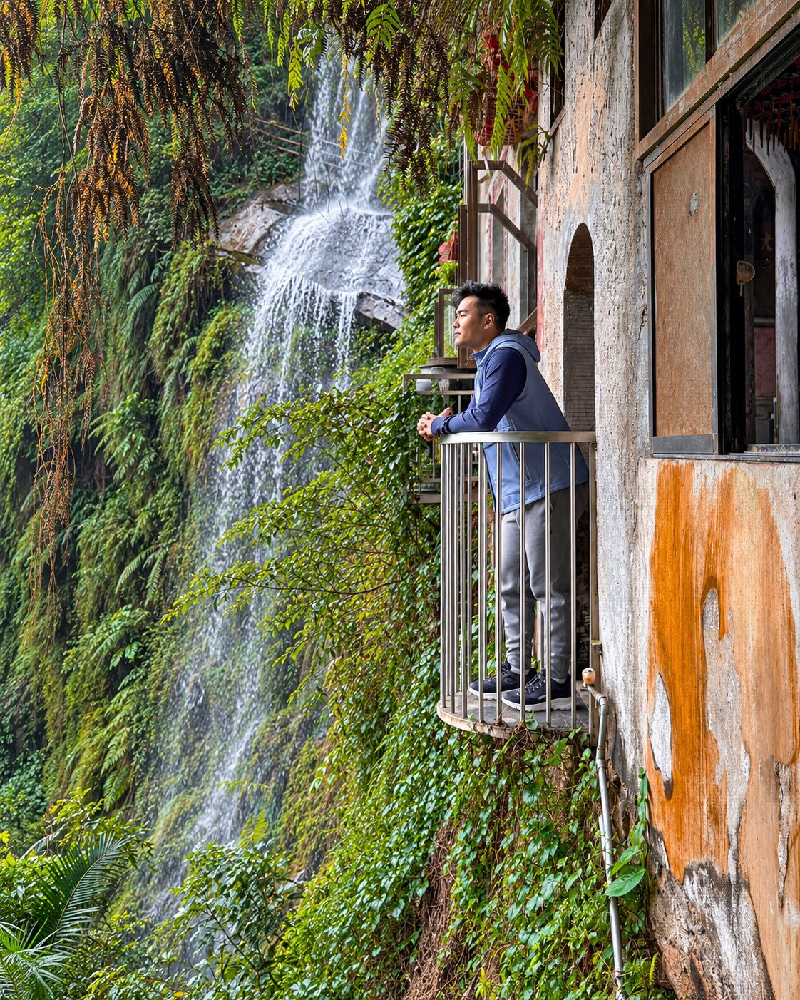

About
A product manager in San Francisco, by way of Taipei and Orange County.
I’m a Principal Product Manager at Oracle, where I lead product strategy for OCI Functions. My work focuses on helping developers get from code to something they can run, understand, and trust.
Earlier at Oracle, I worked on internal developer platforms and contributed to Kubernetes product and partner initiatives. Before that, I worked on enterprise software implementations at Sitetracker and engineering programs at Cisco.
I’m especially interested in enterprise AI and the everyday workflows where better software can make a real difference.
Beyond Oracle
Outside Oracle, I advise a small set of startups, small businesses, and family businesses across North America and Asia. The work ranges from product positioning and pricing to operations and technology decisions.
I like getting close enough to a business to understand what is slowing it down, then helping the team decide what to change first.
Before all that
I grew up between Taipei and Orange County, then studied business at UC Berkeley Haas.

Experience
Oracle Cloud Infrastructure
Principal Product Manager, OCI Functions; earlier work in developer platforms and Kubernetes.
Sitetracker
Enterprise software implementations and customer workflows.
Cisco
Engineering program management for enterprise networking.
Away from the desk
I like hiking around the Bay Area, taking photos, and playing basketball and volleyball when I can. Recently I’ve been getting into running. I’m also an anime fan—Frieren and Your Lie in April are favorites.